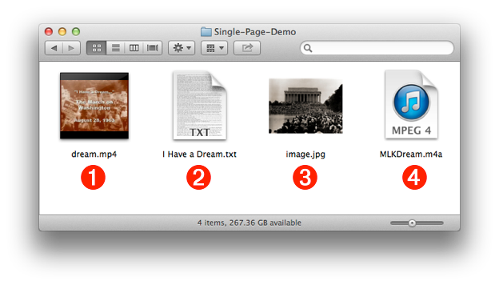
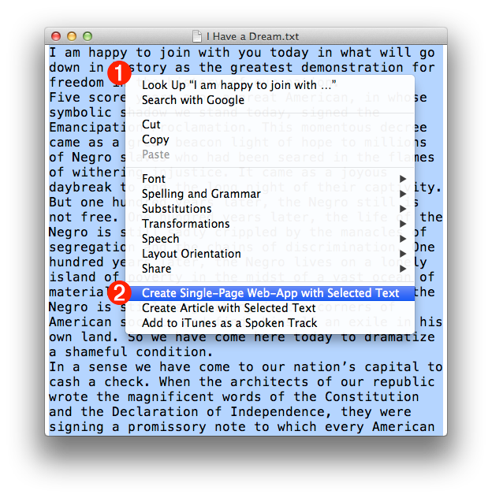
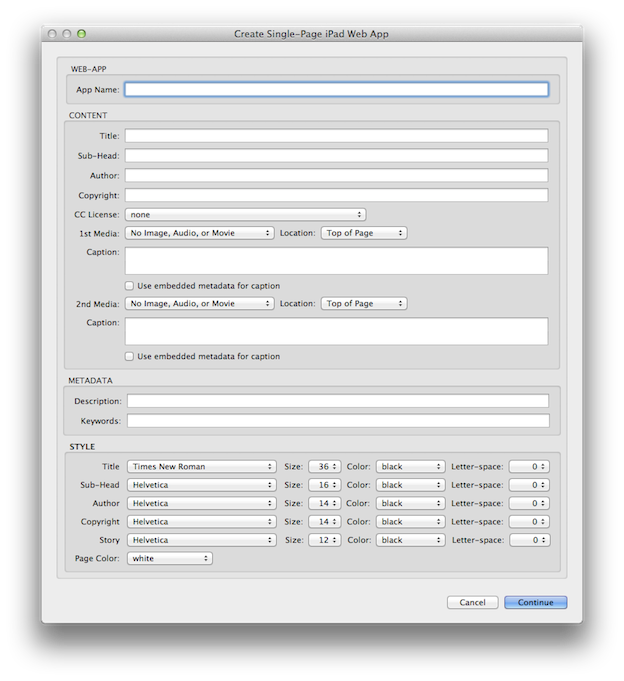
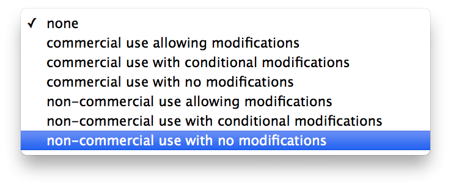
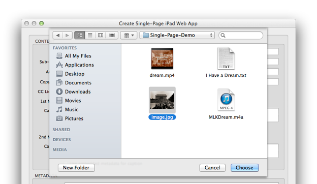
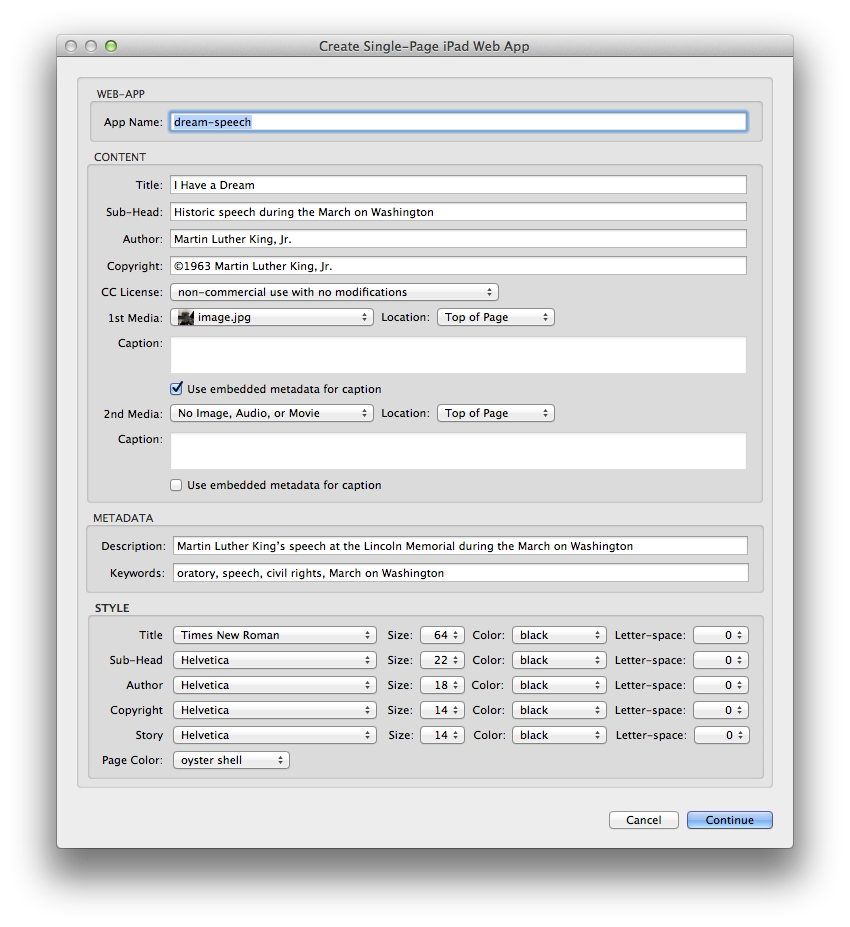
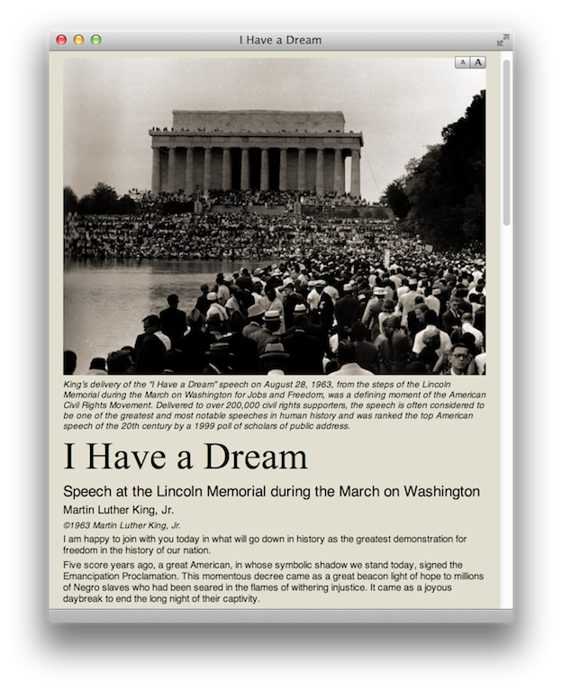

Once the Automator action and service workflow files have been installed, they can be used to create a web-app. In this tutorial, you will create a single-page web-app by following he outlined steps.
This tutorial features content related to Martin Luther King’s famous “I Have a Dream” speech, given at the Lincoln Memorial during the March on Washington in 1963. You will construct a single-page web-app that displays the transcript of the speech along with a photo of the historic moment.
To begin the tutorial, download the provided demo kit.
DO THIS ►Download the ZIP archive containing the Single-Page demo materials. If needed, double-click the ZIP archive to unpack it into a new folder containing the tutorial items.
The created demo folder contains the following files:

1 Movie File • Documentary footage of Martin Luther King’s speech at the Lincoln Memorial in Washington, D.C. The movie file is saved in MPEG format, optimized for display on computers, iPads, iPhones, and other portable devices.
2 Text File • The full transcript of the speech saved as a plain text file.
3 Image File • A black & white photograph taken facing the Lincoln Memorial. This JPEG image contains an IPTC-standard embedded caption.
4 Audio File • An audio recording of the complete speech, saved in MPEG format.
These media items can be used to create variations of the single-page web application, using the previously installed Automator action and system services.
The demo begins by opening the source text document and selecting its content.
DO THIS ► Open the speech transcript file (see above) 2 in TextEdit by double-clicking the text file icon.
The transcript will open in a new TextEdit document window: (see below)
DO THIS ► Select all of the transcript text by choosing Select All from the TextEdit application’s Edit menu, or by typing Command-A (⌘-A). The selection will display with a light blue background. (see above)
With the source text selected, you are ready to access the previously installed system service for creating a single-page web-application.
DO THIS ► While holding down the Control key, click and hold anywhere in the selected text to summon the contextual menu 1 (see below). From the Services sub-menu at the bottom of the contextual menu, select the system service menu option titled: Create Single-Page Web-App with Selected Text 2

The interface for the Automator action, Create Single-Page iPad Web-App, used by the system service, will appear: (see below)

The Automator action interface is divided into four sections: Application, Content, Metadata, and Style. You will fill-in information in the first three sections, and make selections for text and document styling in the last section.
First, the Application section:
DO THIS ► In the Web-App section of the action interface, enter a name for the web-application in the provided text input field. The entered name will be used to name the folder created on the desktop, containing the web-app contents.
Next, the Content section of the action interface:
DO THIS ► In the Content section of the action interface, fill-in the text fields for Title, Sub-Head, Author, and Copyright with the data provided below:
| TITLE | I Have a Dream |
| SUB-HEAD | Historic Speech During the March on Washington |
| AUTHOR | Martin Luther King, Jr. |
| COPYRIGHT | ©1963, Martin Luther King, Jr. |
Next, choose a Creative Commons License to assign to the created web-app content.
DO THIS ► From the CC License popup menu, in the Contents section, choose the last option for non-commercial use, with no changes (see below)

Next, add a piece of media to the page:
DO THIS ► In the Content section of the action interface, select Other… from the 1st Media popup menu: (see below)

A file-picker sheet will drop down over the action interface: (see below)

DO THIS ► In the file-picker dialog, navigate to and select the image file from the demo kit (see above). Click the Choose button in the sheet to confirm the selection of the image, which will be then listed on the selection popup menu when the sheet closes 1 (see below).
There are two other media parameters available for selection (see above):
2 Location Control • You can place the media item (image, audio file, or video file) at either the top of document (after the title), or at the bottom of document.
3 Caption/Description • All included media items can be displayed with a caption that is entered in the text input field. Image files that contain an embedded IPTC description tag, may have the contents of that tag used as the caption, by selecting the checkbox labeled: Use embedded metadata for caption.
TIP: you can view an image’s embedded caption by selecting the image file in the Finder and opening the Information window for the item by typing Command-I (⌘-I).
DO THIS ► Set the parameters for the placed image, by choosing Top of Page from the Location popup menu 2 (see above); and choosing to use the embedded caption metadata by selecting the checkbox labeled: Use embedded metadata for caption 3 (see above)
NOTE: The example video file provided with the demo kit is already encoded properly and does not require further processing.
A web application is really an HTML-based website within a single folder. As such, it can used internet-standard tags to identify its author, copyrights, and content. In the action view dialog, there’s an option to add metadata tags to the head section of the app’s main HTML file, so that the web application content can be identified by search engines.
DO THIS ► In the Metadata section of the action interface, fill-in the text fields for Description, and Keywords with the data provided below: (keywords are comma-delimited)
| DESCRIPTION | Martin Luther King’s speech at the Lincoln Memorial during the March on Washington |
| KEYWORDS | oratory, speech, civil rights, March on Washington |
The Automator action includes controls for setting the typeface, font-color, font-size, and letter spacing of the various text page elements. Typeface choices include a subset of “Internet-Standard” serif and san-serif type faces.
In addition, you can choose the background color of the webpage from a selection of standard colors and custom settings that mimic standard paper colors, like manila.
DO THIS ► For the purposes of this demo, set the text styles popup menus to the values shown in the image below, and change the page color to: oyster shell

With the media chosen, metadata entered, and styling set, you are ready to build the web-application.
DO THIS ► Click the Continue button (above) to have the service build the web-application on the desktop, and open it in Safari for review.

In the next segment, we’ll examine the how to convert the created web-apps into desktop applications.